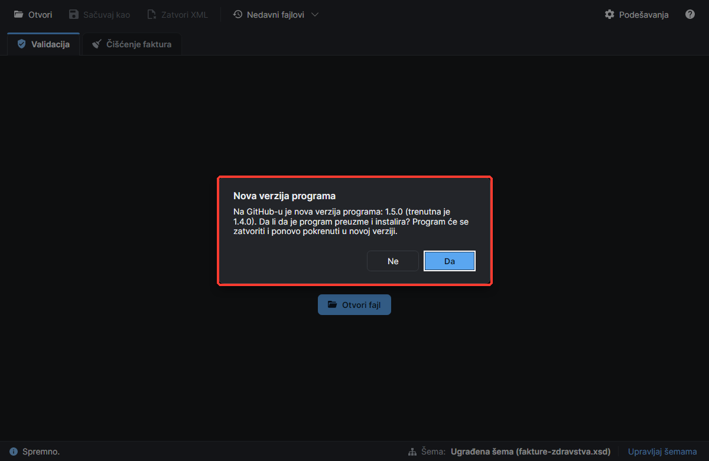
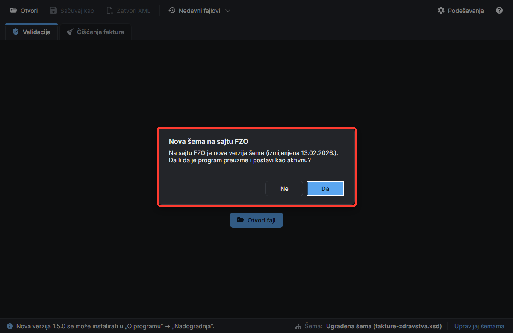
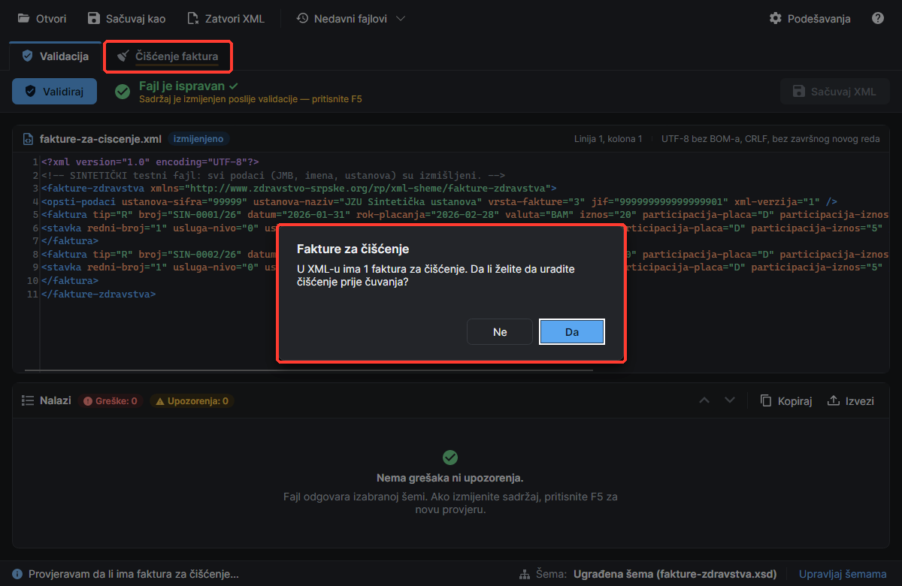
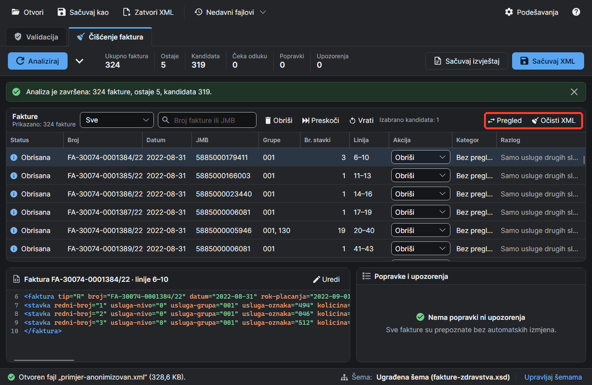
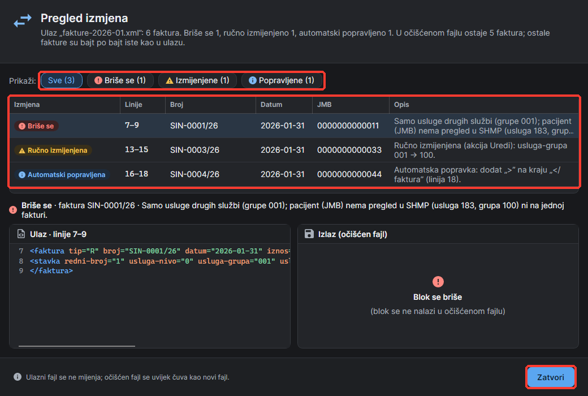
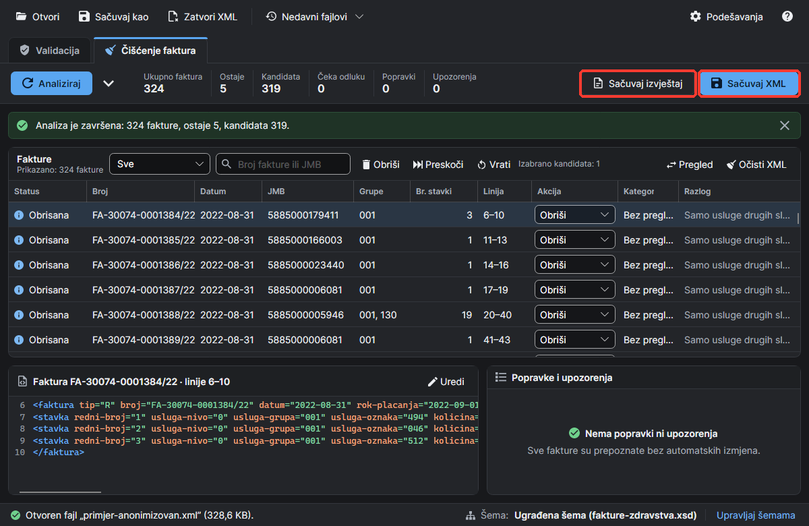
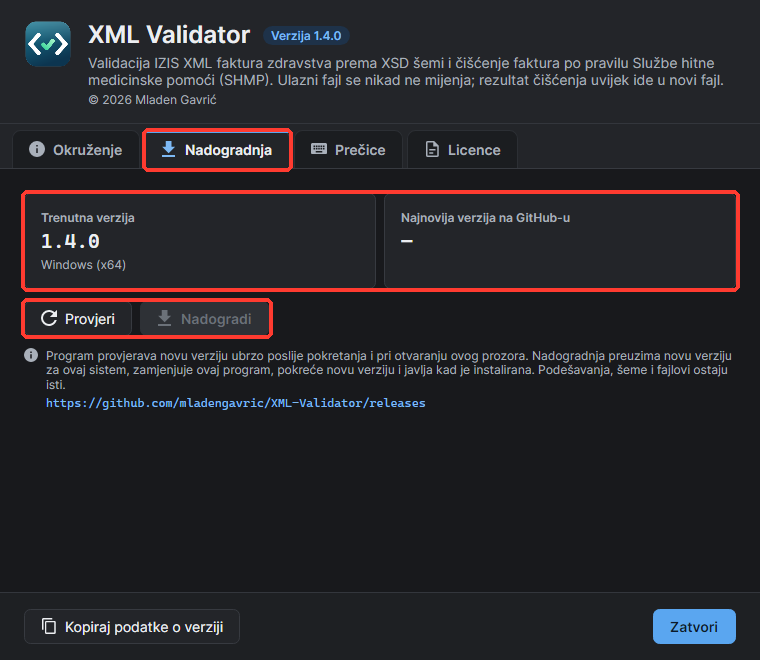

XML Validator radi sa XML fakturama zdravstva (IZIS, šema fakture-zdravstva.xsd) i ima dvije glavne funkcije, svaku u svom tabu:
Validacija: provjera fajla prema XSD šemi FZO-a, sa svim greškama (linija, kolona, opis), ispravka u editoru i čuvanje ispravljenog fajla.
Čišćenje faktura: izbacivanje faktura koje FZO ne prihvata po pravilu Službe hitne medicinske pomoći (SHMP), uz vašu kontrolu nad svakom fakturom i detaljan izvještaj.
Uobičajen tok rada: otvorite fajl → validacija → (po potrebi) ispravka u editoru → čišćenje faktura → sačuvajte XML → program sam validira očišćen fajl.
Kako čitati slike: crveni okvir na slici označava dio programa o kojem korak govori (dugme, polje, tabelu ili poruku).
Ulazni fajl se nikad ne mijenja. Ispravke i rezultat čišćenja uvijek se čuvaju u novi fajl. Ništa se ne briše tiho: svaka obrisana, preskočena, uređena ili popravljena faktura je navedena u izvještaju.
1. Pokretanje programa i nove verzije
Korak 1.1 – Pokrenite program
Kopirajte XmlValidator.exe u bilo koji folder u koji imate pravo upisa (npr. Dokumenti ili radna površina). Instalacija nije potrebna, a nije potreban ni instaliran .NET.
Pokrenite ga duplim klikom. Program se otvara preko cijelog ekrana. Prvo pokretanje traje nekoliko sekundi, a svako sljedeće oko dvije.
Ako Windows prikaže upozorenje „Windows protected your PC”, kliknite More info → Run anyway (program nije digitalno potpisan).
Gore je traka sa komandama (Otvori, Sačuvaj kao, Zatvori XML, Nedavni fajlovi, Podešavanja, pomoć ?), ispod su tabovi Validacija i Čišćenje faktura, a dole statusna traka sa porukama i aktivnom šemom (Upravljaj šemama).
Slika 1. Početni ekran prije otvaranja fajla.
Linux: program XmlValidator nema ekstenziju. Prvo mu dajte dozvolu za pokretanje (chmod +x XmlValidator), pa ga pokrenite sa ./XmlValidator ili duplim klikom.
Korak 1.2 – Nova verzija programa ili šeme
Nekoliko sekundi poslije pokretanja program provjerava, ako ima interneta:
da li na GitHub-u postoji nova verzija programa; ako postoji, pita „Nova verzija programa” (slika 2). Da preuzima i instalira novu verziju (poglavlje 7);
da li je na sajtu FZO objavljena nova šemafakture-zdravstva.xsd; ako jeste, pita „Nova šema na sajtu FZO” (slika 3). Da znači da je program sam preuzme, uveze i postavi kao aktivnu, pa javi „Šema je nadograđena”.
Uz Ne program istu verziju više ne nudi pri pokretanju (u statusnoj traci piše gdje se može uraditi ručno). Klik van pitanja ili Esc samo zatvara pitanje, pa se ono ponavlja pri sljedećem pokretanju. Bez interneta se ne prikazuje ništa.

Slika 2. Ponuda nove verzije programa.

Slika 3. Ponuda nove šeme sa sajta FZO.
2. Otvaranje i zatvaranje fajla
Korak 2.1 – Otvorite XML fajl
Fajl možete otvoriti na tri načina:
kliknite Otvori (ili Ctrl+O) i izaberite fajl;
prevucite fajl mišem iz Windows Explorera na prozor programa (slika 4);
izaberite fajl iz liste Nedavni fajlovi (slika 5).
Novi fajl se uvijek otvara u tabu Validacija i odmah se validira. Isti fajl se istovremeno analizira i za čišćenje.
Slika 4. Fajl prevučen na prozor: pustite ga i program ga otvara.
Korak 2.2 – Nedavni fajlovi
Kliknite Nedavni fajlovi i izaberite jedan od posljednje otvorenih fajlova. Fajl koji više ne postoji uklanja se iz liste uz poruku; Obriši listu prazni listu.
Slika 5. Lista nedavnih fajlova.
Korak 2.3 – Zatvorite fajl bez zatvaranja programa
Kliknite Zatvori XML u traci (ili Ctrl+W). Fajl se zatvara u oba taba, a program ostaje otvoren za sljedeći fajl. Ako imate nesačuvane izmjene ili odluke o čišćenju, program prvo pita da li da ih odbaci. Fajl na disku se ne dira.
Trepćuća linija ispod naziva taba skreće pažnju: ispod Čišćenje faktura kad u fajlu ima faktura za čišćenje, a ispod Validacija kad fajl ima neispravljenih grešaka. Linija nestaje kad otvorite taj tab.
Slika 6. „Zatvori XML” i trepćuća linija ispod taba „Čišćenje faktura”.
3. Validacija fajla
Korak 3.1 – Rezultat validacije
Otvorite fajl; tab Validacija (Ctrl+1) ga odmah provjerava prema aktivnoj šemi. Ponovo validirate dugmetom Validiraj (F5).
Ako je fajl ispravan, pored dugmeta piše Fajl je ispravan, a na sredini prozora se na tri sekunde pojavi zeleno obavještenje XML je čisto prošao validaciju prema FZO XSD šemi.
Slika 7. Ispravan fajl i zeleno obavještenje.
Korak 3.2 – Pregledajte greške
Ako fajl ima grešaka, crveno piše koliko ih je i na koliko faktura (npr. Pronađeno 4 greške u 4 fakture). Sporne linije su označene u editoru, a sve greške su u tabeli Nalazi (ozbiljnost, linija, kolona, vrsta i poruka).
Poruka kaže gdje je problem (npr. „Faktura SIN-0001/26”), šta nije u redu i šta treba upisati, npr. „polje „tip” (tip fakture) ima vrijednost „X” koja nije u propisanom obliku. Upišite tip fakture (jedno slovo: R, T ili O).” Kad zadržite miš iznad poruke, vidi se i originalni tehnički opis greške (na engleskom), koji može zatrebati podršci.
Slika 8. Fajl sa četiri greške.
Korak 3.3 – Idite na mjesto greške
Kliknite grešku u tabeli Nalazi: editor skače na tu liniju i kolonu i označava mjesto greške. Strelicama iznad tabele, ili sa F8 i Shift+F8, prelazite na sljedeću i prethodnu grešku. Kopiraj kopira nalaze, a Izvezi ih čuva u .txt ili .csv fajl.
Slika 9. Izabrana greška je označena u editoru; strelicama iznad tabele prelazite na sljedeću i prethodnu grešku.
Korak 3.4 – Ispravite fajl u editoru
Ispravite tekst direktno u editoru. Fajl dobija oznaku izmijenjeno, a ispod rezultata piše da je sadržaj izmijenjen poslije validacije.
Brojevi linija u Nalazima prate vaše izmjene: kad obrišete ili dodate redove, nalazi ispod se pomjeraju, a nalazi iz obrisanih redova nestaju. Kad obrišete posljednji red sa greškom, validacija se pokreće sama.
Kliknite Validiraj (F5) da provjerite ispravku.
Dugme Sačuvaj XML desno je plavo (aktivno) samo dok u editoru ima nesačuvanih izmjena.
Slika 10. Izmijenjen sadržaj: oznaka „izmijenjeno” i aktivno dugme „Sačuvaj XML”.
Korak 3.5 – Sačuvajte ispravljen XML
Kliknite Sačuvaj XML. Program prvo provjeri da li u izmijenjenom sadržaju ima faktura za čišćenje.
Ako ih ima, pita „Fakture za čišćenje” (slika 11). Da vodi na tab Čišćenje faktura, koji analizira sadržaj iz editora (zajedno sa vašim ispravkama). Ne nastavlja čuvanje bez čišćenja.
Izaberite novo ime fajla. Program predlaže ime sa dodatkom _ispravljen (npr. fakture_ispravljen.xml) i ne dozvoljava čuvanje preko ulaznog fajla.
Pitanja „Da/Ne” se pojavljuju na sredini prozora. Klik van pitanja ili Esc ga zatvara bez odgovora (čuvanje se otkazuje). Za kopiju sadržaja pod drugim imenom tu je i Sačuvaj kao (Ctrl+Shift+S) u gornjoj traci.

Slika 11. Pitanje prije čuvanja kad u XML-u ima faktura za čišćenje.
4. Čišćenje faktura (SHMP)
Pravilo čišćenja
FZO prihvata usluge Službe hitne medicinske pomoći (SHMP) (usluga-grupa 100) i usluge drugih službi samo za pacijente koji su pregledani u SHMP. Pregled je usluga usluga-oznaka 183 u grupi 100. Pacijent se prepoznaje po JMB-u (osiguranik-jmb), na bilo kojoj fakturi u fajlu i bez obzira na datum. Svaka faktura dobija jednu kategoriju:
Kategorija
Značenje
Šta se radi
Usluga SHMP
faktura ima bar jednu uslugu iz grupe 100
ostaje
Pregledan u SHMP
samo usluge drugih službi, ali isti pacijent ima pregled 183 u SHMP
ostaje
Bez pregleda u SHMP
samo usluge drugih službi, a pacijent nigdje nema pregled u SHMP (ili faktura nema JMB)
kandidat: Obriši, Preskoči ili Prikaži
Prazna faktura
faktura nema nijednu stavku
kandidat: Obriši, Preskoči ili Prikaži
Sumnjiv blok
granica fakture nije jasna (npr. nedostaje </faktura>)
morate odlučiti sami
Čišćenje nije automatsko. Tab samo analizira fajl i pokazuje šta bi se uradilo. Akcije se primjenjuju tek kad kliknete Očisti XML ili Sačuvaj XML, a očišćen fajl se uvijek čuva kao novi fajl.
Korak 4.1 – Pregledajte analizu
Izaberite tab Čišćenje faktura (Ctrl+2). Analiza je već urađena; ponovo je pokrećete plavim dugmetom Analiziraj (F5). Ako ste u tabu Validacija mijenjali tekst, analiza se pri prelasku na ovaj tab ponavlja nad sadržajem iz editora (uz pitanje ako bi se izgubile vaše odluke).
Pored dugmeta je sažetak: Ukupno faktura, koliko Ostaje, koliko je Kandidata za brisanje, koliko Čeka odluku, broj Popravki i Upozorenja.
U tabeli Fakture je svaka faktura sa statusom, brojem, datumom, JMB-om, grupama, linijama, akcijom, kategorijom i razlogom. Klikom na red vidite tekst fakture ispod tabele.
Padajući meni filtrira (Sve, Samo kandidati, Samo upozorenja, Čeka odluku), a polje za pretragu traži po broju fakture ili JMB-u (Ctrl+F).
Slika 12. Rezultat analize (anonimizovani primjer: od 324 fakture ostaje 5).
Korak 4.2 – Podešavanja analize
Kliknite strelicu odmah desno od Analiziraj da otvorite traku sa podešavanjima:
Grupa SHMP: šifra grupe usluga SHMP (100);
Prazna faktura i Bez pregleda u SHMP: podrazumijevana akcija za te fakture (Obriši, Preskoči ili Prikaži);
Automatske popravke: popravka polomljenih zagrada u tagovima;
Podrazumijevano: vraća grupu 100, pregled 183, Obriši i popravke, pa ponovo analizira.
Promjena akcije važi odmah. Promjena grupe ili popravki traži novu analizu (F5), a čuvanje je blokirano dok je ne pokrenete.
Slika 13. Otvorena traka sa podešavanjima analize.
Korak 4.3 – Akcija „Prikaži”: odlučite za svaku fakturu
Ako za kategoriju izaberete Prikaži (odluka po fakturi), te fakture ostaju bez akcije i dobijaju status Čeka odluku. Izaberite filter Čeka odluku, pa svakoj fakturi u koloni Akcija izaberite Obriši, Preskoči ili Uredi. Dok neka faktura čeka odluku, crvena poruka na dnu objašnjava zašto čuvanje nije moguće, a link Prikaži fakturu vodi na prvu koja čeka.
Slika 14. Uz „Prikaži” fakture čekaju vašu odluku.
Korak 4.4 – Promijenite akciju za jednu ili više faktura
Za jednu fakturu izaberite akciju u koloni Akcija.
Za više faktura označite redove (Ctrl+klik ili Shift+klik), pa kliknite Obriši (Delete), Preskoči ili Vrati (vraća podrazumijevanu akciju) iznad tabele. Pored dugmadi piše koliko je kandidata izabrano.
Preskoči znači da faktura ostaje u fajlu netaknuta, a u izvještaju se vodi kao preskočena.
Slika 15. Akcija „Preskoči” postavljena za dvije označene fakture.
Korak 4.5 – Riješite sumnjiv blok
Sumnjiv blok je dio fajla u kojem granica fakture nije jasna, npr. faktura bez zatvarajućeg taga koja „guta” sljedeću. Program o njemu ne odlučuje sam: blok čeka odluku, a čuvanje nije moguće dok mu ne izaberete akciju. Pogledajte tekst bloka ispod tabele i objašnjenje u listi Popravke i upozorenja, pa izaberite Obriši, Preskoči ili Uredi.
Slika 16. Sumnjiv blok čeka odluku.
Korak 4.6 – Uredite fakturu ručno
Izaberite akciju Uredi (ili kliknite Uredi iznad teksta fakture).
Ispravite tekst fakture u editoru.
Kliknite Primijeni (Ctrl+Enter). Program provjerava da je tekst ispravan XML i ponovo klasifikuje fakturu. Odustani (Esc) odbacuje izmjenu.
Ručna izmjena (staro i novo stanje) bilježi se u izvještaju.
Slika 17. Ručno uređivanje fakture.
Korak 4.7 – Provjerite automatske popravke
Program sam popravlja polomljene zagrade (npr. </faktura bez >). Svaka popravka je u listi Popravke i upozorenja sa brojem linije; klik na nju vodi na fakturu. Popravke se mogu isključiti u podešavanjima analize.
Slika 18. Faktura sa automatskom popravkom.
Korak 4.8 – Pregled i „Očisti XML”
Pregled (desno iznad tabele) otvara prozor Pregled izmjena: šta se briše, ručno mijenja ili automatski popravlja, sa ulazom lijevo i izlazom desno (slika 20). Prozor služi samo za pregled; zatvara se dugmetom Zatvori.
Očisti XML primjenjuje izabrane akcije na sadržaj u programu i odmah ga ponovo analizira, da vidite kako izgleda očišćen fajl. Na disk se ništa ne upisuje. Fakture koje ste preskočili ostaju preskočene i u novoj analizi.

Slika 19. Dugmad „Pregled” i „Očisti XML”.

Slika 20. Pregled izmjena (filteri, lista izmjena, „Zatvori”).
Korak 4.9 – Sačuvajte očišćen XML i izvještaj
Kliknite Sačuvaj XML (Ctrl+S). Ako akcije još nisu primijenjene, program pita „XML nije očišćen… očistiti i sačuvati?”: Da čisti i čuva, Ne otkazuje.
Izaberite ime fajla. Predlaže se <ime>_ociscen.xml pored ulaza. Ako očišćen fajl ne prolazi provjeru prema šemi, program to kaže i pita da li ipak želite da ga sačuvate.
Sačuvan očišćen fajl se odmah otvara i validira u tabu Validacija.
Kliknite Sačuvaj izvještaj (Ctrl+R) i izaberite .txt (za čitanje) ili .csv (za Excel). Izvještaj sadrži svaku obrisanu, preskočenu, uređenu i popravljenu fakturu sa razlogom; ako ste čistili više puta („Očisti XML”), svaki prolaz je u izvještaju.

Slika 21. „Sačuvaj izvještaj” i „Sačuvaj XML”.
5. Podešavanja
Korak 5.1 – Opšta podešavanja
Kliknite Podešavanja (Ctrl+,), stranica Opšte. Izmjene se čuvaju odmah.
Tema: svijetla, tamna ili prema sistemu.
Grupa usluga SHMP (usluga-grupa): 100 = Služba hitne medicinske pomoći.
Usluga pregleda u SHMP (usluga-oznaka): 183 = pregled. Pacijent sa ovom uslugom u grupi SHMP smatra se pregledanim u SHMP.
Slika 22. Podešavanja → Opšte.
Korak 5.2 – Podrazumijevane akcije i popravke
Prazna faktura i Faktura samo sa uslugama drugih službi, pacijent nije pregledan u SHMP: Obriši, Preskoči ili Prikaži (odluka po fakturi).
Automatske popravke zagrada: Uključeno ili isključeno.
Vrati podrazumijevano: vraća sva podešavanja čišćenja na početne vrijednosti.
Slika 23. Podrazumijevane akcije i automatske popravke.
6. Šeme
Korak 6.1 – Pregled šema
U Podešavanja → Šeme (ili klikom na Upravljaj šemama u statusnoj traci) vidite sve šeme. Ugrađena šema je dio programa, uvijek je dostupna i ne može se obrisati. Ako uvezena aktivna šema nedostaje ili je oštećena, program se vraća na ugrađenu i to prikazuje u statusnoj traci.
Slika 24. Lista šema i dugme „Provjeri novu verziju”.
Korak 6.2 – Provjerite novu verziju šeme na sajtu FZO
Kliknite Provjeri novu verziju. Program gleda datum izmjene („Last modified”) šeme fakture-zdravstva.xsd na sajtu FZO (zdravstvo-srpske.org/rp/xml-sheme) i poredi njen sadržaj sa aktivnom šemom:
ako je ista, piše Nema nove verzije;
ako je nova, pita da li da je preuzme i postavi kao aktivnu; uz potvrdu program sve uradi sam, a šema u listi dobija naziv „FZO šema od datum”.
Istu provjeru program radi sam ubrzo poslije pokretanja (korak 1.2).
Korak 6.3 – Uvezite šemu sa računara
Kliknite Uvezi sa računara i izaberite .xsd fajl ili .zip paket koji FZO objavljuje na svom sajtu (fajl možete i prevući na prozor).
Izaberite uvezenu šemu i kliknite Razlike prema aktivnoj da vidite šta je novo.
Kliknite Postavi kao aktivnu. Od tada se fakture provjeravaju po njoj.
Slika 25. Uvezena šema i razlike prema aktivnoj.
Korak 6.4 – Uvoz sa linka
Kliknite Uvezi sa linka i nalijepite adresu (https) ZIP paketa sa sajta FZO. Program preuzima paket uz prikaz napretka; Prekini zaustavlja preuzimanje.
Slika 26. Preuzimanje šeme sa linka.
7. Nadogradnja programa
Korak 7.1 – Provjerite i instalirajte novu verziju
Kliknite ? u traci (ili F1) i izaberite tab Nadogradnja. Program odmah provjerava posljednju verziju na GitHub-u; Provjeri ponavlja provjeru.
Lijevo je Trenutna verzija, desno Najnovija verzija na GitHub-u, a ispod opis novosti iz posljednje verzije.
Ako postoji novija verzija, kliknite Nadogradi. Ako imate nesačuvane izmjene, program prvo pita da li da ih odbaci.
Program preuzima novu verziju za vaš sistem (Windows ili Linux) uz prikaz napretka (Prekini zaustavlja preuzimanje), provjerava da fajl nije oštećen, zamjenjuje sebe novom verzijom, zatvara se i pokreće novu verziju.
Nova verzija javlja Nadogradnja je završena sa brojem instalirane verzije.
Podešavanja, uvezene šeme i nedavni fajlovi ostaju isti. Ako nadogradnja ne uspije (npr. nema interneta), program ostaje u postojećoj verziji.

Slika 27. „O programu” → „Nadogradnja”.
Folder programa mora biti upisiv. Ako je XmlValidator.exe u folderu u koji korisnik nema pravo upisa (npr. C:\Program Files), program javlja da novu verziju treba preuzeti ručno sa stranice github.com/mladengavric/XML-Validator/releases.
8. Prečice i „O programu”
Korak 8.1 – Prozor „O programu”
Kliknite ? u traci (ili F1). Prozor prikazuje verziju i autora programa, a u tabovima okruženje i folder sa podacima, nadogradnju, spisak svih prečica i licence korišćenih komponenti. Kopiraj podatke o verziji kopira tekst za prijavu problema (bez podataka iz faktura).
Slika 28. „O programu” sa spiskom prečica.
Prečica
Komanda
Ctrl+O
Otvori XML fajl
Ctrl+W
Zatvori XML (program ostaje otvoren)
Ctrl+Shift+S
Sačuvaj kao (novi fajl)
Ctrl+1 / Ctrl+2
Tab „Validacija” / „Čišćenje faktura”
Ctrl+,
Podešavanja
F1
O programu, nadogradnja i prečice
F5
Validiraj / Analiziraj (u aktivnom tabu)
F8 / Shift+F8
Sljedeća / prethodna greška
Ctrl+Shift+C / Ctrl+E
Kopiraj / izvezi nalaze validacije
Ctrl+F
Pretraga faktura po broju i JMB-u
Delete
Obriši označene fakture (kandidate)
Ctrl+S
Sačuvaj očišćen XML
Ctrl+R
Sačuvaj izvještaj
9. Konzolni alat (za napredne korisnike)
Korak 9.1 – Čišćenje iz komandne linije
xmlvalidator-cli.exe radi isto što i program, bez prozora, npr. za obradu više fajlova odjednom. Pravila su ista: ulaz se nikad ne mijenja, a postojeći fajl se prepisuje samo uz --overwrite.
Program ispisuje svaku obrisanu fakturu i sažetak, a pravi fakture_ociscen.xml i izvještaj.
Slika 29. Čišćenje u konzoli (primjer sa sintetičkim fajlom).
Komanda / opcija
Značenje
validate fajl.xml
validacija; --report nalazi.txt čuva nalaze
clean ulaz.xml [izlaz.xml]
čišćenje; izlaz je podrazumijevano <ime>_ociscen.xml
--nomatch delete|skip|ask
akcija za fakture bez pregleda u SHMP (ask = „Prikaži”)
--empty delete|skip|ask
akcija za prazne fakture
--suspicious delete|skip
odluka za sumnjive blokove (bez nje se izlaz ne pravi)
--group 100, --exam 183|any
grupa SHMP i usluga pregleda (any = bilo koja usluga SHMP)
--mask-jmb, --overwrite
maskiranje JMB-a u izvještaju; dozvola za prepisivanje izlaza
help clean
sve opcije sa objašnjenjem
Izlazni kod: 0 = uspjeh, 1 = fajl ima greške ili izlaz nije sačuvan, 2 = pogrešni argumenti, 3 = fajl ne može da se pročita ili upiše.
Lični podaci: fakture i izvještaji sadrže JMB i zdravstvene podatke. Ne šaljite ulazne fajlove ni izvještaje van ustanove; ako izvještaj ipak treba podijeliti, napravite ga konzolnim alatom sa opcijom --mask-jmb (npr. 0101990******). Program nikad ne šalje sadržaj faktura na internet; na mrežu ide samo radi provjere nove verzije programa i šeme.